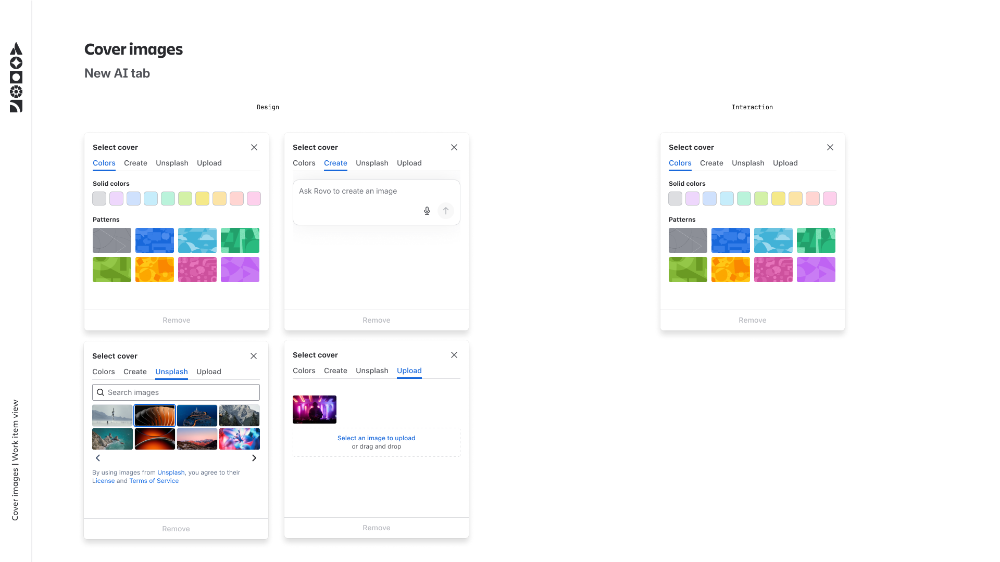
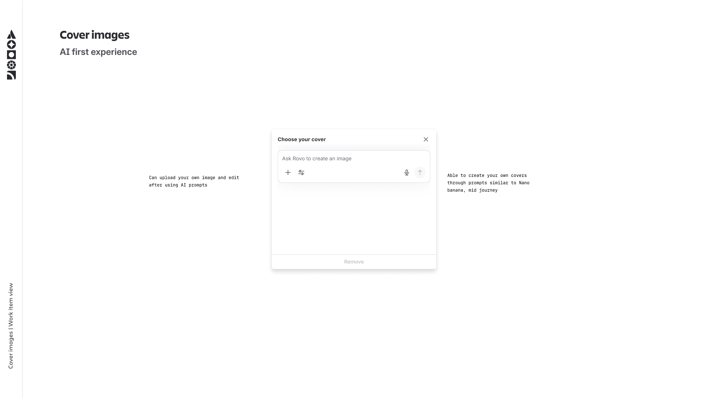
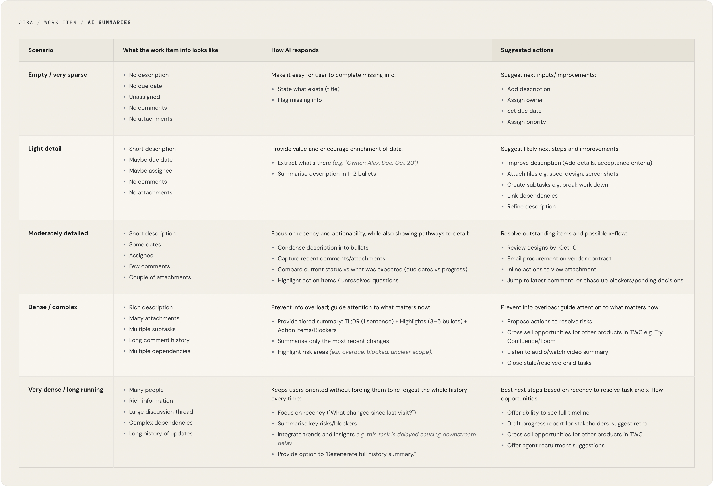
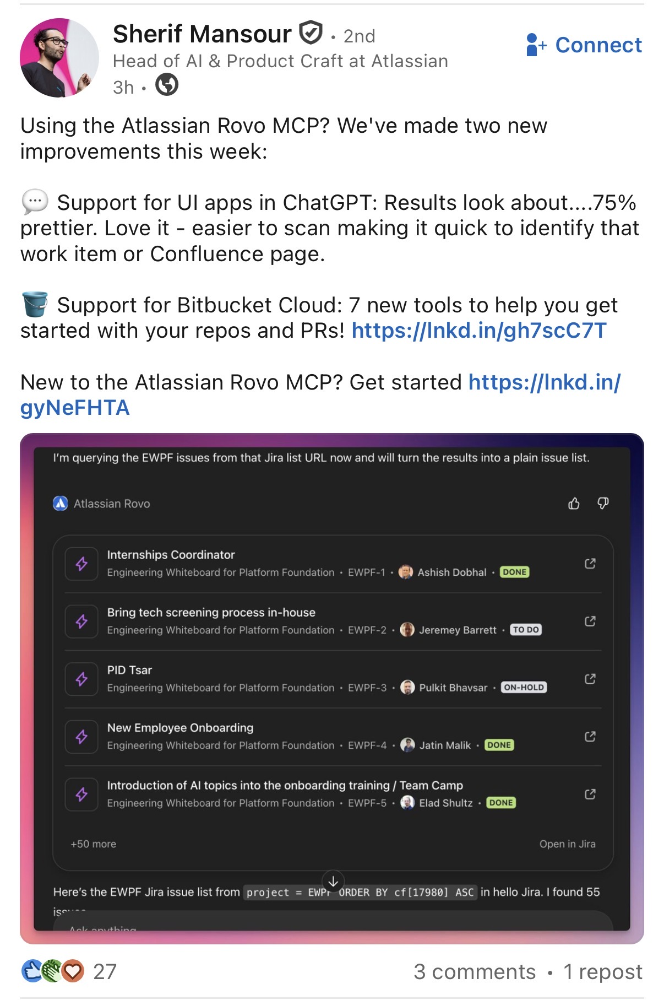

Experience 1
Intelligent card covers
AI-generated imagery for work item cards, by allowing users to provide a prompt. Gives teams a faster visual scan across boards without any manual effort.


Designing intelligence into Jira's most-used surface.
The Jira work item is where teams coordinate their most critical work, but the experience had grown cluttered, static, and unintuitive. I led the design exploration for how generative AI could transform it. My process spanned from foundational concept research into work item creation to building a scalable framework for AI-driven summaries and contextual integrations across the platform.
Work items are the backbone of Jira, yet the interface has remained a "one-size-fits-all" scrolling form., used by millions daily to track everything from bugs to epics. As Jira evolved toward AI-driven experiences, this view emerged as a critical opportunity for transformation. Despite being a team's source of truth, work items often fluctuate between two extremes: too sparse to be useful, or too cluttered to be understood. This information density creates a paradox where more work leads to less clarity, forcing teams to hunt for answers: What’s the status? What’s the next step? Who owns the momentum?
Work items are where everything happens in Jira, but the experience hadn't meaningfully evolved to match the lifecycle of work. It was the same shape whether the item was a one-line placeholder or a dense artefact with months of discussion, attachments, and dependencies. Users had to do the work of triaging what mattered, every time they opened it, creating three major challenges:
Whether an item is empty or overwhelmed, the burden falls entirely on the user. This leads to work arounds or for teams to abandon Jira for Slack or spreadsheets just to get a straight answer. We recognised that generative AI is uniquely suited for these tasks in helping generate the foundation when an item is new, and helping synthesise the noise once it becomes complex
I partnered with a researcher to understand how AI could reshape the work item experience. We conducted concept testing with eight marketers from both Jira and competitor tools (like Monday.com) to find out:
These findings helped shape the future direction of the work item experience.
Users loved the idea of a "fluid" start. AI-assisted creation felt significantly better than the current manual setup in Jira or Monday.com.
Users want one place for the truth, but inconsistent behaviours and manual data entry meant information quality varied wildly across items. AI-driven concepts were seen as the most credible way to solve this.
Work items start as placeholders and accumulate detail over time. Any AI experience we designed would need to work across that entire spectrum.
Coming out of the research, a specific opportunity stood out: when users open an existing work item, they spend real time re-orienting. Scrolling through comments, checking what changed, figuring out what's blocking progress. For dense or long-running items, this can take minutes of reading before any actual work happens.
An AI generated summary panel, at the top of the work item, promised to fast track that but only if it knew what to say. A summary of an empty work item is useless while a summary of a year old task with 200 comments needs to be ruthlessly prioritised. The design problem wasn't "what does the summary look like" — it was "what should the summary be, given how much is actually there?"
Before designing anything new, I began by auditing every AI experience already present on the work item. A few patterns became clear:
I then built a framework for the summary component that mapped the work item onto a spectrum of content density - from empty placeholder to very dense. For each state, the framework defined three things:

The framework helped in the following ways:
With the framework in place, the visual design became a series of focused problems rather than one overwhelming one.
The AI summary was one of several generative experiences I designed across the work item. Each addressed a different moment in the work item lifecycle.
AI-generated imagery for work item cards, by allowing users to provide a prompt. Gives teams a faster visual scan across boards without any manual effort.


I designed the Jira work item experience inside ChatGPT - bringing task creation, updates, and context directly into the AI conversation layer. Users can create and manage Jira work items without leaving their workflow, meeting them where they're already thinking through problems.

I was tasked to implement a Jira widget to show Jira issues within ChatGPT as part of the project to launch the first Atlassian connector for ChatGPT, leveraging their newly released apps SDK. While we knew what we wanted to see in the widget, we had no designer assigned to that small project. It was fully engineering-led. I casually reached out to you Ruvi to help me ensure the layout of this new Jira widget for ChatGPT would look good, professional and in line with both the ChatGPT Design Guidelines, and the Atlassian Design System ones. We paired together on the design, iterating it, to reach something we were proud of. You helped tremendously, and the project stakeholders all praised the design you inspired:
"This looks so good!" - Matthew Canham.
"What you have looks great!" - Julien Bassan.
Thanks a lot Ruvi for helping me with small design tasks once again. This is now being shared with OpenAI. Your work has a great impact to Atlassian overall! Cannot wait to work with you again.
— Matthieu Di Berardino, Principal Engineer
The research report was shared broadly across the organisation, reaching 103 viewers - including executives and leaders across multiple teams. It received recognition as a clear, well-structured piece of strategic design work that shaped how the broader team understood the opportunity.

The AI summary system is scheduled to launch at Team ‘26, Atlassian’s flagship global conference. The project reinforced a core principle: good AI design isn’t about how much it can generate, it’s about removing friction from how teams already work.
The structured response framework also crystallised how AI is most effective when it’s anchored. Rather than unleashing models to be conversational and open ended, framing them in a clear structure made them dramatically more useful. A framework isn't a constraint on AI, it's a design pattern that makes AI useful at scale.
The open question I'm still sitting with is how do you design for appropriate trust in AI experiences? If users trust the AI too little, they’ll ignore it and keep doing the manual work. If they trust it too much, they might miss a critical detail the AI skipped. The density framework is a start — it changes how the AI behaves based on how much data is available — but "calibrated trust" is a design problem we are only just beginning to solve.